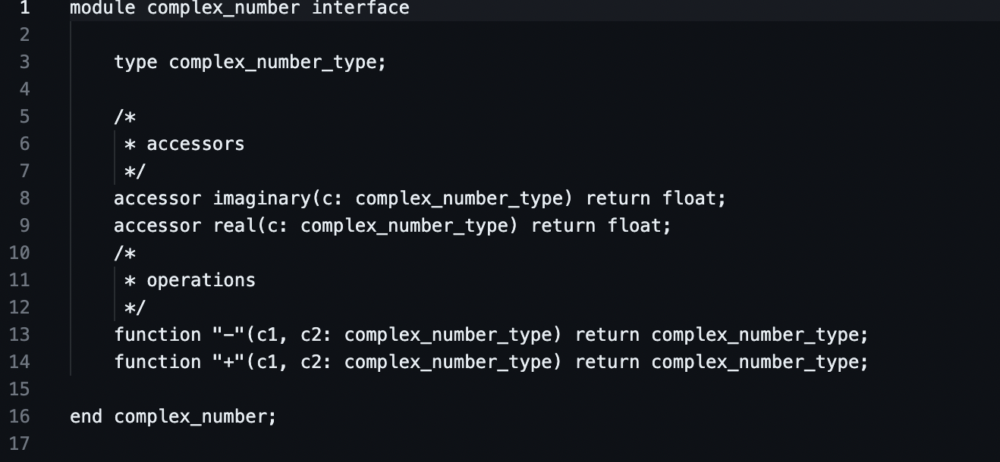

Lexer
This program uses .cci and .ccx files as the input. It then parses the file into categories and writes it to an output file. The 8 categories are
- Comment
- String
- Keyword
- Character Literal
- Operator
- Numeric Literal
- Identifier
- Unknown
Usage: ./lexer input_file output_file
Input File
Output File

Junk Utility in Bash
This program creates a .junk directory in the home directory. Items that are junked are moved to .junk and can either be:
- Deleted
- Retrieved from junk
- Display the contents of junk
This version is written using bash

Junk Utility in Python
This program creates a .junk directory in the home directory. Items that are junked are moved to .junk and can either be:
- Deleted
- Retrieved from junk
- Display the contents of junk
This version is written using python